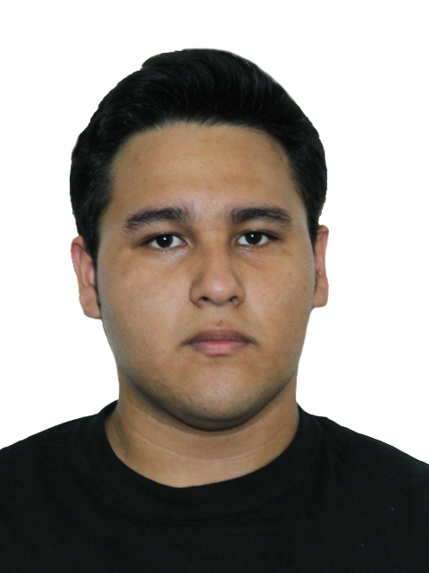

Soft Skills
Trabajo en equipo
Gestión del tiempo
Organización
Tolerancia a la frustración
Adaptabilidad
Datos personales
Nombre:
Aldo Francisco.
Apellidos:
Díaz Torres.
Ciudad:
Córdoba
Telefono:
+52 271 179 19 43
Hard skills
Lenguajes de programación
Java
C #
C ++
SQL
Web (HTML5, CSS3, JavaScript)
Entornos de desarrollo
Netbeans 8.2
Atom
Visual Studio
Eclipse
Herramientas
StarUML
SVN
Github
PostgreSQL
MySQL Workbench
Datos académicos
Nivel académico:
Preparatoria.
Estado:
Actualmente estudiando
Institución:
Universidad Veracruzana.
Carrera:
Licenciatura en Ingeniería de Software.
Nivel:
5° Semestre.
Matrícula:
S17004066